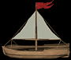
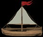

| |
El mundo de Argentum Online tiene sus mares, océanos y lagos a través de las cuales podes llegar a nuevas y diversas tierras.
Una vez que tengas una BARCA en el inventario debes seleccionarla y presionar TECLA USAR (U o DOBLE CLICK) cerca de una costa o muelle.
|
A continuación una lista con las barcas existentes:
| IMAGEN |
NOMBRE |
CLASE REQUERIDA |
NIVEL REQUERIDO |
ATAQUE MIN/MAX |
DEFENSA MIN/MAX |
PRECIO |
|
 |
Barca |
Cualquiera |
28 |
5 / 10 |
5 / 10 |
24000 |
|
 |
Galera |
Ladrón |
28 |
20 / 25 |
8 / 12 |
53000 |
|
 |
Galeón |
Ladrón |
28 |
35 / 40 |
10 / 15 |
87000 |
Consideraciones:
- Todas las clases navegan a partir de nivel 28, sin excepción.
- El Ladrón navega a partir de nivel 28, y la habilidad de no dropear en agua (uso como mochila) se limita a nivel 28 y utlizando el Galeón.
Barcas Faccionarias:
Si tu personaje pertenece a una facción la barca que utilize se verá con el color predominante de esa facción.
 
Barcas según tu Status:
Dependiendo de tu Status, ya sea <CIUDADANO> o <CRIMINAL> la barca cambia la bandera.Tal como se muestra en las siguientes imágenes :
  
Monturas
En este juego podras utilizar monturas como caballos, dragones, elefantes, etc
Algunas monturas las dropean npcs (ver seccion ciudades y dungeons para saber quien)
Otras las podes comprar en el NPC de la ciudades

Montura Dragon Negro, se encuentra en el mapa 270

Montura Dragon Dorado, se encuentra en el mapa 270

Montura Dragon Rojo, se encuentra en el mapa 166

|
|